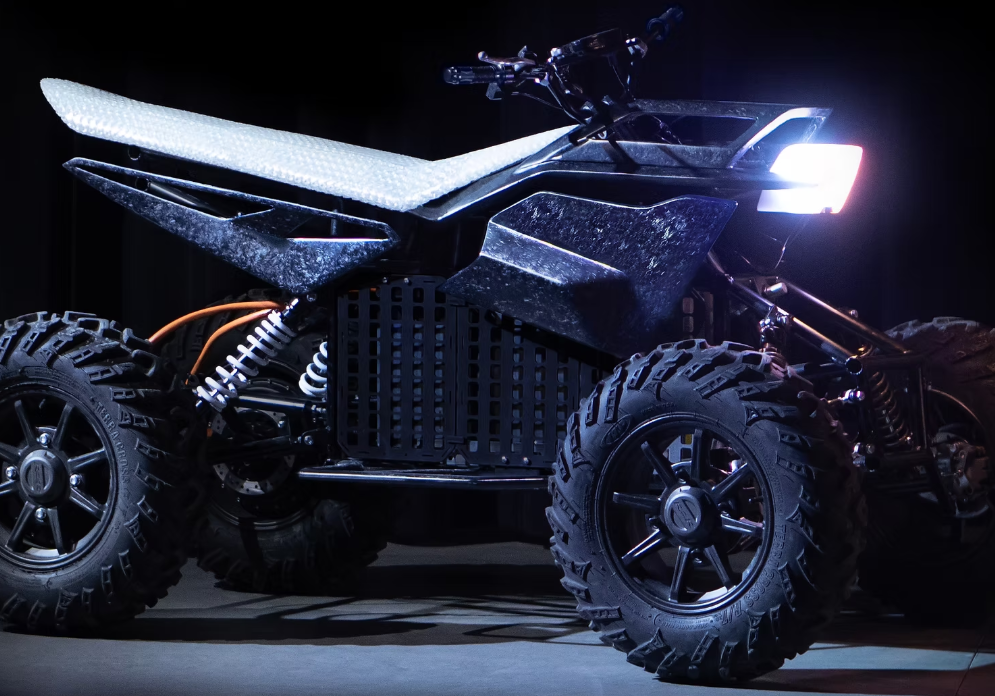

Mechanical Chassis Design and Assembly Intern
- Designed an ATV suspension system by optimizing 3D CAD and validating with FEA, improving driving dynamics by 15%.
- Applied Design for Assembly principles to tire and brake assemblies, producing a production-ready design that accelerated completion by 12 days.